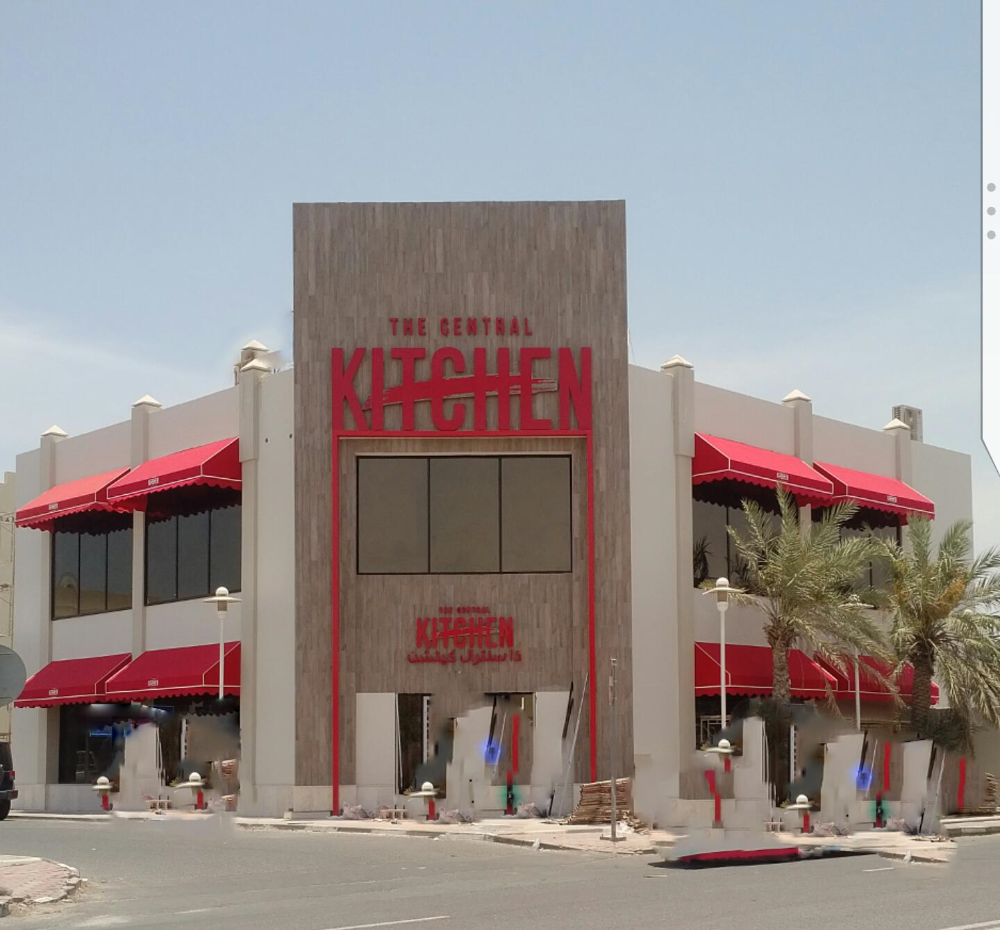

Coatings that keep surfaces cleaner for longer.
ActivaColours photocatalytic coatings use daylight to break down airborne pollutants and dirt on the surface — so façades and interiors stay cleaner, with less maintenance. Supplied to the UK trade by the pallet.
Why specify ActivaColours
Three benefits you can verify and we can stand behind.
Self-cleaning surfaces
Light-activated photocatalysis breaks down organic dirt on the surface, so treated façades and walls stay visibly cleaner between repaints.
Reduces airborne pollutants
The same reaction breaks down pollutants such as NOx in the air at the surface — independently testable to ISO 22197-1.
Low-VOC, lower maintenance
Waterborne, low-VOC formulations that cut cleaning and repaint cycles — a strong whole-life-cost story for specifiers.
Built for the people who already buy paint by the pallet
We supply builders' merchants, contractors and facilities buyers across the UK — wholesale, pallet-scale, with the datasheets and certificates your specification needs.
Builders' merchantsFaçade & render contractorsFacilities & housingArchitects & specifiers
See trade terms
Lead products
A range for exterior, interior and infrastructure — these three lead the UK launch.
PhotoActiva TB
Invisible treatment that makes stone, brick and concrete self-cleaning without changing appearance — ideal for façades and heritage.
Details →PhotoSiloxane
Breathable, decorative façade coating. Up to 91% airborne-pollutant reduction in manufacturer tests; wide colour range.
Details →PhotoSilicate
Mineral silicate coating for masonry and heritage — colour-stable, very durable, pollutant-reducing.
Details →Interested in stocking or specifying ActivaColours?
Tell us what you need and we'll send pricing, datasheets and pallet options.
Request a quote